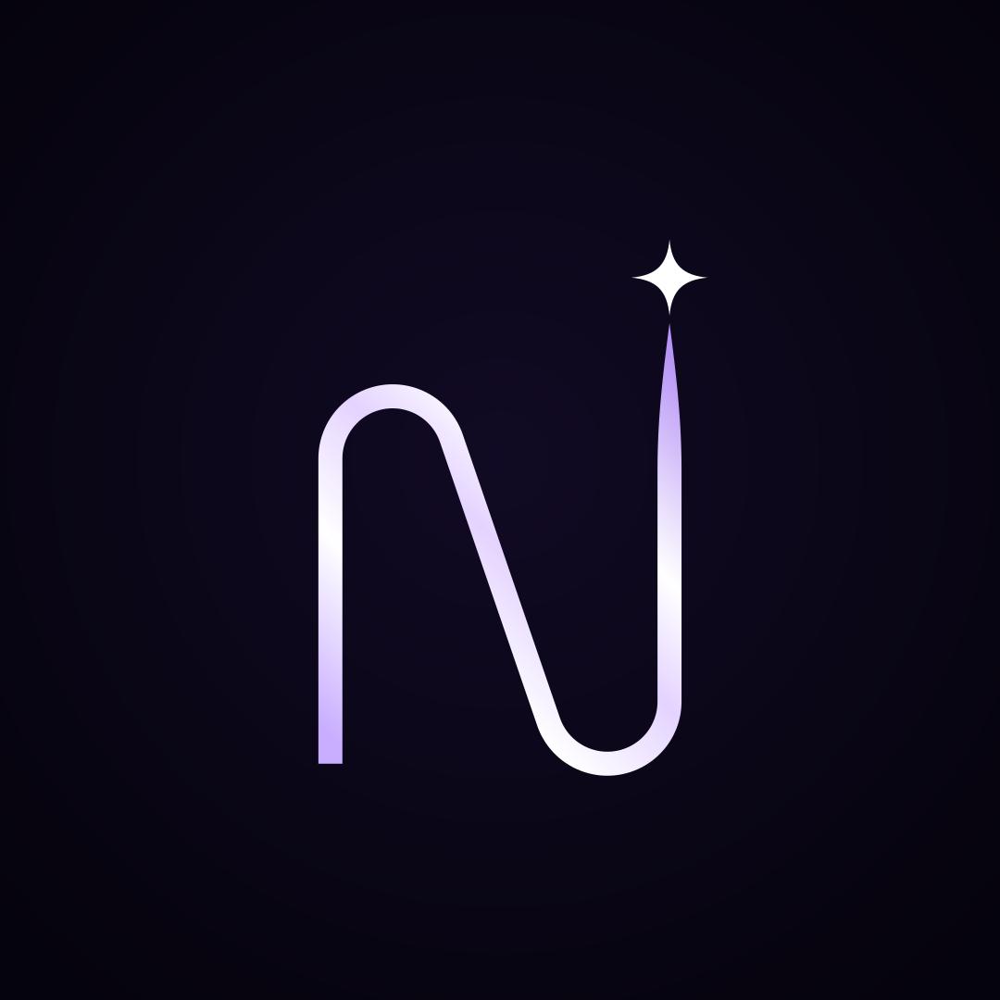

- Rebuilt from exact turns and one straight diagonal, so it reads as an N, not a squiggle
- Right stem climbs past the left (the next level) and tapers to a point
- The star sits right on the tip, as if the line ends in a spark
- Pearl sheen instead of flat white; a richer black